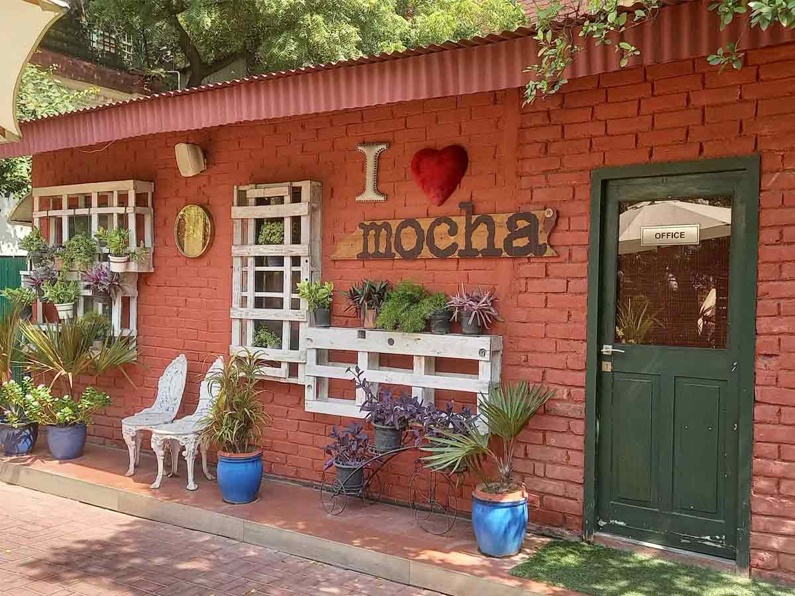
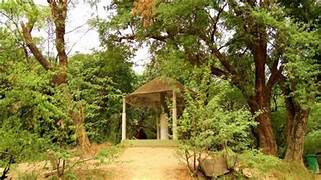
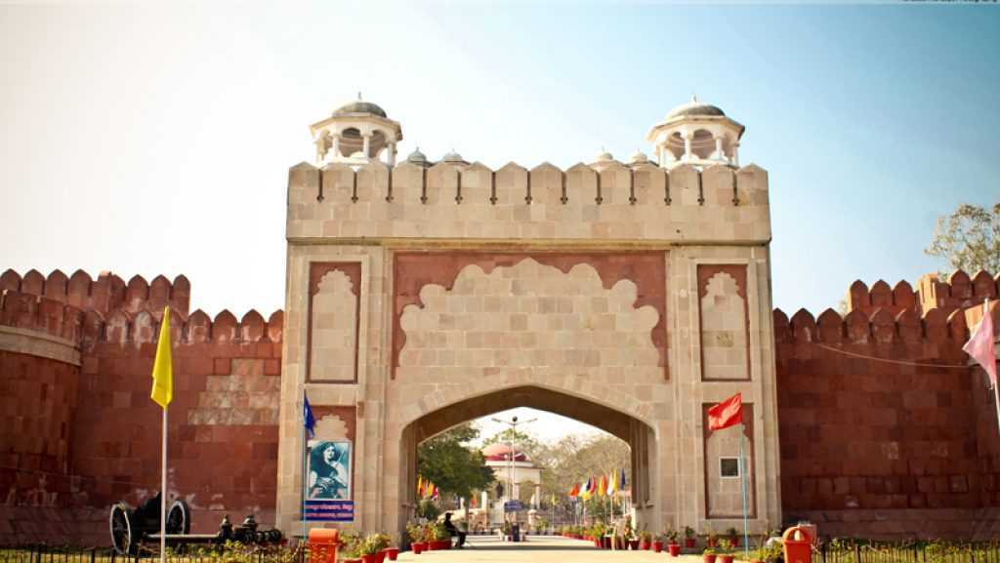

>Romantic Places
>there are some romamtic places in kanpur

mocha cafe and bar
Mocha is the country's first completely indigenous and eclectic café chain which offers a vast variety of food and beverage based on demographics, local and economic factors. It is one of the most successful franchise model across plural India owing to its adaptive and avant-garde strategy which helps in engaging and embracing a wide variety of cultures while still maintaining its strong brand image

Allen Forest Zoo
Allen Forest Zoo is one of the oldest and largest zoological parks in India. It is spread over an area of 190 acres, which makes Allen Forest Zoo the largest open green space in Kanpur. It is one of the few zoos in India created in a manmade forest. It has been established and opened for the public on 4th February 1974.
Allen Forest Zoo is also known as Kanpur Zoological Park and is popularly called Kanpur Zoo. The zoo is home to more than 1400 animals of around 125 species. It is one of the best and most popular tourist places in Kanpur city. Allen Forest Zoo is the best place for couples and families to visit in Kanpur city.
Address: Hastings Ave, Azad Nagar, Nawabganj, Kanpur, Uttar Pradesh

Nana Rao Parkr
Nana Rao Park is a big and beautiful park situated in Kanpur city with a dark history. It is believed to be the site where the bodies of the massacred British women and children were dumped in a well during the 1857 rebellion.
An old banyan tree, with great historical significance to the Indian Independence struggle, is located on the park ground. Nana Rao Park is a couple-friendly place and it is one of the best places for couples to hang out in the city.
Address: Phool Bagh Chauraha, Mall Road, Phool Bagh, Civil Lines, Kanpur, Uttar Pradesh

Kamla Retreat
Kamla Retreat is a private property owned by the famous Singhania family who owns the JK Group of companies. It is a beautiful and romantic place in Kanpur with many attractions like a zoo, park, garden, museum, toy train, swimming pool, etc.
The museum is one of the best historical sites in Kanpur having some great collections. You have to get a ticket to enter here. Kamla Retreat is a romantic place for couples in Kanpur city Uttar Pradesh.
Address: F8V2+9QW, Near HBTU, HBTU East Campus, Nawabganj, Kanpur, Uttar Pradesh